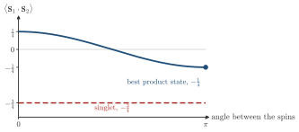
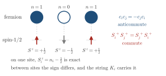

Page 1 of 12 of this session
7.1 Two regimes of many-body physics
Mean field gave us the magnets, the superconductors and the charge density wave of the previous sessions, so why does it give the wrong answer for a quantum spin liquid? We will now see that there no decoupling of the quartic term gives the ground state, so we need a tool that does not assume a broken symmetry. We will also see that fermions and spins are two languages for this same problem.
\[H = \sum_{ij} t_{ij}\, c_i^\dagger c_j \;+\; \sum_{ijkl} V_{ijkl}\, c_i^\dagger c_j^\dagger c_k c_l. \tag{1.5}\]
\[H_\text{Heis} = \sum_{\langle ij\rangle} J_{ij}\, \mathbf S_i\cdot\mathbf S_j, \qquad J_{ij} = \frac{4t_{ij}^2}{U}. \tag{6.5}\]
The first equation is the general interacting Hamiltonian of Section 1.12, with the hopping \(t_{ij}\) and the two-body interaction \(V_{ijkl}\), written with the two creation operators first. The second is the Heisenberg model of Section 6.9, with the antiferromagnetic exchange \(J_{ij}=4t_{ij}^2/U\) between the spins \(\mathbf S_i\) and \(\mathbf S_j\), which the Hubbard model gives for \(U\gg t_{ij}\) with one electron on each site.
Let us go back to the general interacting Hamiltonian that we have used in the whole course.
With the four operators of the interaction in the order that we use in this session, the general interacting Hamiltonian is
\[H = \sum_{ij} t_{ij}\, c_i^\dagger c_j \;+\; \sum_{ijkl} V_{ijkl}\, c_i^\dagger c_j c_k^\dagger c_l. \tag{7.1}\]
When the quartic term can be replaced by a bilinear one with an order parameter, the matter is weakly correlated. When no decoupling gives the ground state, it is strongly correlated.
This is the Hamiltonian (1.5) of Session 1 with the four operators in another order, which exchanges the two middle indices of \(V_{ijkl}\) with a minus sign and adds a bilinear term to the hopping.
The steps From the order of (7.1) to the order of (1.5)
We take one term first. The anticommutation relation \(c_jc_k^\dagger=\delta_{jk}-c_k^\dagger c_j\) moves \(c_k^\dagger\) to the left of \(c_j\), so
\[c_i^\dagger c_j\, c_k^\dagger c_l = \delta_{jk}\, c_i^\dagger c_l - c_i^\dagger c_k^\dagger c_j c_l .\]
The first term has two operators, so it is a hopping from site \(l\) to site \(i\). The second term has the order of (1.5), with the two middle indices exchanged and a minus sign.
Now we sum over all the indices with the coefficients \(V_{ijkl}\) of (7.1). The quartic part is the interaction of (1.5) with the coefficients
\[V'_{ijkl} = -V_{ikjl},\]
and the bilinear part adds \(\sum_j V_{ijjl}\) to the hopping \(t_{il}\). So the two forms hold the same Hamiltonian, meaning that the reordering changes the names of the coefficients and the hopping, and not the physics.
The kinetic term is free and can be solved exactly, and the interaction term in general cannot. In all sessions so far we treated (7.1) in the same way. We decoupled the quartic term with mean field, as in Section 1.12, we replaced it with an effective bilinear Hamiltonian, and we looked at which symmetry is broken by the resulting order parameter. This strategy defines what we can call weakly correlated matter. In this sense, the magnets of Session 6, the superconductors of Session 5 and the charge density wave of Section 1.13 are all single-particle physics, once we find the right symmetry-broken background.
In this session we are in the opposite regime, which is strongly correlated matter. Here the interactions are so strong that no effective single-particle Hamiltonian gives the ground state, for any choice of the decoupling. Quantum spin liquids and fractional Chern insulators are our two main examples, and more generally, the same problem appears when we want an accurate phase diagram of a truly interacting model. In both cases we cannot solve the problem with an ansatz for the broken symmetry. Instead, we need something close to an exact numerical solution, or at least a controlled approximation that does not assume symmetry breaking from the start. This is what tensor networks give us.
In the organic Mott insulator \(\kappa\)-(BEDT-TTF)\(_2\)Cu\(_2\)(CN)\(_3\) the spins sit on a nearly isotropic triangular lattice. The static susceptibility follows the Heisenberg model of spins 1/2 on this lattice, antiferromagnetic, with the exchange constant \(J\sim250\) K. The \(^1\)H NMR spectra show no indication of long-range magnetic ordering down to \(32\) mK, four orders of magnitude below \(J\), and the authors write that these results suggest a quantum spin liquid. Our own reading is that a mean-field calculation of this Heisenberg model gives an order below a temperature of the order of \(J\), so this material is a case where mean field fails. The measurement is in this article.
A quantum spin liquid has no order parameter. What does a self-consistent mean-field calculation give for it?
Show the answers
- A. ✗ False
This is false. Zero solves the self-consistent equations, but the loop leaves it. Started from small random spins of size \(10^{-3}\), it ends with \(|\langle\mathbf S_i\rangle|=\tfrac12\) at zero temperature, both for the Heisenberg dimer and for the triangular lattice.
- B. ✓ True
This is true. The self-consistent loop looks for a symmetry-broken solution, and it finds one. For the Heisenberg dimer it gives two antiparallel spins, while the true ground state is the singlet, with \(\langle S^z_i\rangle=0\) on both sites. In a spin liquid the order that mean field finds is wrong in the same way.
- C. ✗ False
This is false. Mean field is a product-like trial state, so its energy is only an upper bound. For the singlet of two spins the best mean-field energy is \(-1/4\) while the exact one is \(-3/4\).

Two spins in a product state against the singlet. The best product state has the energy \(-\frac14\) and the singlet has \(-\frac34\).
7.2a Fermions and spins, two languages for the same physics
Before we build the tool, let us point out something that was present in the last sessions without being said explicitly. We have used two families of many-body Hamiltonians that look different. The first family is the fermionic Hamiltonians of the form (7.1), with a general two-body interaction \(V_{ijkl}\), where density-density interactions are only a special case, and we used them in Sessions 1 to 5. The second family is the spin Hamiltonians, mainly the Heisenberg model \(H = \sum_{\langle ij\rangle} J_{ij}\, \mathbf{S}_i \cdot \mathbf{S}_j\) of (6.5). We used it for the magnons of Section 6.13, and we use it again in this session for quantum spin liquids. These are not two different topics. They are the same physics written in two different languages, and in this section we make this translation precise.

For two different sites the fermion and the spin operators obey
\[c_1^\dagger c_2^\dagger=-c_2^\dagger c_1^\dagger,\qquad S_1^+S_2^+=S_2^+S_1^+.\]
We replace each \(c_i^\dagger\) by \(S_i^+\) with no extra factor. Which rule of the fermions is lost?
Show the answers
- A. ✗ False
This is false. On one site the replacement is exact. An occupied site is the up spin with \(S^z=+\tfrac12\), and an empty site is the down spin with \(S^z=-\tfrac12\).
- B. ✓ True
This is true. The images \(S_1^+\) and \(S_2^+\) commute, so the exchange of the two sites gives \(+1\) instead of \(-1\). This relative sign between sites is what the Jordan-Wigner string will carry.
- C. ✗ False
This is false. The image also vanishes, \((S_1^+)^2=0\), since a spin 1/2 that points up cannot be raised again. Two fermions on one site and two raisings of one spin are both forbidden.
Two spins 1/2 are in a product state, where spin 1 points along the unit vector \(\mathbf n_1\) and spin 2 along \(\mathbf n_2\). Show that \(\langle\mathbf S_1\cdot\mathbf S_2\rangle=\tfrac14\,\mathbf n_1\cdot\mathbf n_2\), and compare its lowest value with the singlet.
Solution
In a product state the expectation value of a product of operators on two different sites is the product of their expectation values, so
\[\langle\mathbf S_1\cdot\mathbf S_2\rangle=\sum_{a=x,y,z}\langle S_1^a\rangle\langle S_2^a\rangle.\]
A spin 1/2 that points along \(\mathbf n\) is the eigenstate of \(\mathbf n\cdot\mathbf S\) with the eigenvalue \(+\tfrac12\). For \(\mathbf n\) along \(z\) it has \(\langle\mathbf S\rangle=(0,0,\tfrac12)\), and a rotation gives \(\langle\mathbf S\rangle=\tfrac12\,\mathbf n\) for any direction. So \(\langle\mathbf S_1\cdot\mathbf S_2\rangle=\tfrac14\,\mathbf n_1\cdot\mathbf n_2\), and the lowest value is \(-\tfrac14\), for antiparallel spins.
For the singlet we write
\[\mathbf S_1\cdot\mathbf S_2=\tfrac12\big[(\mathbf S_1+\mathbf S_2)^2-\mathbf S_1^2-\mathbf S_2^2\big].\]
Each spin has \(\mathbf S_i^2=\tfrac34\), and the singlet has the total spin 0, so it gives \(\tfrac12(0-\tfrac34-\tfrac34)=-\tfrac34\).
So no product state reaches the ground state of the Heisenberg dimer \(J\,\mathbf S_1\cdot\mathbf S_2\), and mean field, which is built from product states, misses \(\tfrac12J\) of its energy. The missing part is the entanglement of the singlet, which the tensor networks of this session are built to describe.
- In Section 7.2b the Jordan-Wigner string fixes the sign between sites, and the two languages become one exact mapping.
- In Section 8.3 the singlet of two spins is the starting point of quantum magnetism, and in Section 8.9 mean field comes back for spinons without breaking any symmetry.
- In Section 10.3 neural network quantum states are a second tool for the strongly correlated regime.